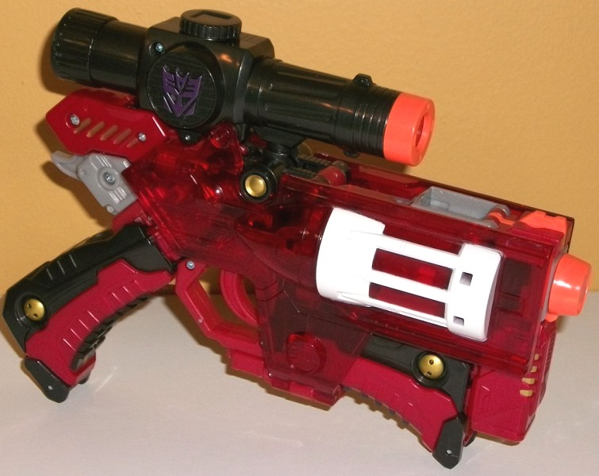
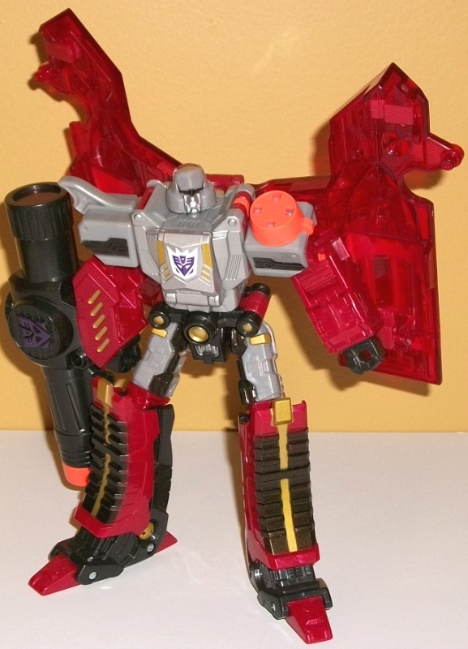
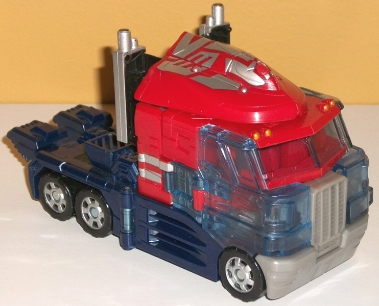
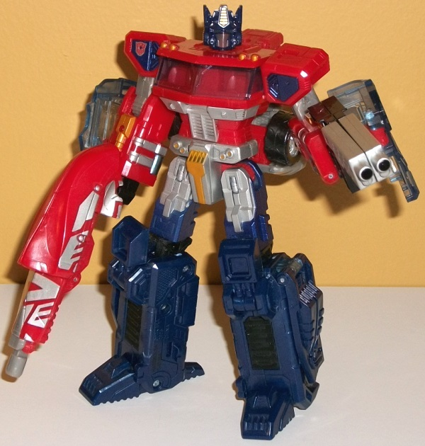

"One
Shall Stand, One Shall Fall" Platinum Edition Set (Amazon Exclusive)
"One
Shall Stand, One Shall Fall" Platinum Edition Set (Amazon Exclusive)
Set Price
: ~$75 (U.S.)
Overall Rating
: 9.5
(NOTE: Because this set is composed of repaints,
this is not a full-blown review. This mainly covers any changes made to
the set and the color scheme, and merely compares it to the original versions
of these molds. For a review on the original Classics voyager Megatron,
go
here
. For a review on the original Classics
voyager Optimus Prime, go
here
.)
Megatron


Allegiance
: Decepticon
Size
: Voyager
Difficulty of Transformation
: Medium
Color Scheme
: Transparent cherry
red, milky glittery charcoal black, light milky glittery gray, milky cherry
red, and some bright safety orange, metallic purple, metallic gold, silver,
and white
Individual Rating
: 9.4
Megatron's Classics toy
that actually transforms into a gun-- a Nerf-y gun, but c'mon, I'm surprised
they're even able to get THAT out nowadays-- has gotten a redeco, and in
colors that seem more fitting for an evil Decepticon leader. The "core"
of the robot mode-- the chest, shoulders, and upper legs-- are pretty vintage
G1 Megatron colors. The base plastic is a light milky gray, which normally
I don't like-- and it's still not exactly great-- but there's a bit of
glitter mixed in, which makes it look marginally better. The front of the
chest and the face is painted a nice silver, which pretty much always looks
good. There's some black-- of a rather "impure, charcoal-y" shade-- used
on the shoulders, waist, large eyebrow, and upper legs. Of course if contrasts
with the gray decently enough, though I feel a more solidly black color
would've worked better. At least there's also some glitter mixed in with
this plastic, as well. Once you get out of that core section of the robot
mode, though, Megatron keeps his black on places like the gun scope-blaster,
the fists, and the front of the lower legs and feet, but gains red in most
other areas. On his main body and the trigger area of the gun, it's a cherry
red, which looks quite good against the black and makes for a classic "bad
guy" color scheme. It looks great, especially when you add in the metallic
gold that's in the same place as the greenish-gold on the original. The
large shells of much of the gun mode that hang behind his arms are a transparent
version of pretty much the same shade, and just complete the "Emperor of
Destruction" look. Like, somehow the red makes Megs look like he got an
upgrade, I love it. The transparent red is also used for the light piping
on his eyes, which looks AWESOME. In gun mode, where the red is particularly
prevalent, there's some white paint on the rotating chamber details which
helps add some contrast and variety in between all that red. (There's also
white paint outlining the Decepticon emblem on the chest.) As for some
other, minor details, there's some metallic purple on the Decepticon emblem
molded on the gun scope, and of course some safety orange on the front
of the gun scope and barrel. Of course the latter is kinda clashy, but
it's to comply with safety laws, so I can't really fault Hasbro there.
No mold changes have
been made to this version of Megatron.
Optimus
Prime


Allegiance
: Autobot
Size:
Voyager
Difficulty of Transformation
: Medium
Color Scheme
: Red, dark dull flat
blue, transparent pale blue, moderately light milky gray, and some silver,
black, metallic dark blue, and pale metallic bronze
Individual Rating
: 9.6
Since he doesn't transform
into a gun, Optimus' colors are much closer to the original Classics version,
though there are certainly a few obvious differences. The most obvious
is that part of the sides of the vehicle mode are transparent pale blue
plastic, as opposed to it being painted red w/ other paint apps. This looks
REALLY odd in vehicle mode, like you made off with some stolen factory
prototype or something that's not finished. In ROBOT mode I will admit
it looks a bit better, as they're hanging off his arms in that mode and
making them transparent makes them...
slightly
less obvious. There's
also a big ol' Autobot symbol painted on top of the vehicle roof that becomes
a gun for robot mode, with the peg for the gun, funnily enough, where the
insignia's mouth is, so it looks like the Autobot symbol is surprised.
It's kinda funny, but does look a bit odd on top of the vehicle mode. The
rest of the changes, when compared to the original Classics Prime, are
minor. The shades of red are pretty much exactly the same. The black is
also the same and used in the same places. The silver paint apps on the
smokestacks, the waist and hips, the faceplate, the wheel hubs, and the
bits of stripes on the sides may in some places be in different places,
but are the same shade as on the original. The blue plastic is a bit duller
and more of a "navy blue". I personally prefer the original, slightly more
vibrant dark blue, but they're both pretty comparable. There's also a really
nice shade of dark metallic blue added to the upper legs, which looks superior
to the original blue on the initial Classics Optimus. The gray plastic
on the waist and front of the truck mode is a bit duller, but close to
the original shade. Additionally, some pale metallic bronze has been added
(mostly) in place of the yellow on the original, with some paint on the
headlights, pipe-like details on the lower arms, and on the waist. In particular
the metallic color combo of bronze, silver, and dark blue on the robot
hips and waist looks great and is a definite step up from how the initial
version of this mold looked in that area. On the other hand, there isn't
any color added to the little flip-up kneepads, so he looks duller there.
In general, this color scheme has fewer "primary" shades than the original,
with some slight tweaks-- and of course, big unpainted transparent side
bits on the vehicle mode.
No mold changes have
been made to this version of Optimus Prime.
"One Shall Stand, One Shall Fall" Bio
:
Optimus Prime and Megatron have fought
many battles, but none more memorable than this. When the Decepticons launch
a surprise attack on Autobot City, the two leaders meet in the middle of
the firefight. Just when Optimus Prime has gained the upper hand on his
archrival, an over-eager Autobot Hot Rod tries to help, giving the Decepticon
tyrant the opening he needs... and the victory he has sought for centuries.
OPTIMUS PRIME-- The courage of the Autobot
leader will be a beacon of hope until the day that all are one.
MEGATRON-- The Decepticon leader has
waited an eternity for this chance, and he doesn't miss his shot.
The "One Shall Stand,
One Shall Fall" pack is an excellent way to get these two GREAT Classics
molds if you don't have them already. Granted, Classics Optimus has been
re-released a fair number of times by this point, and the odd unpainted
transparent plastic bits are pretty weird-looking in truck mode, but it's
still a great mold with an otherwise pretty decent color scheme. Classics
Megatron takes the already great mold and makes it mega-awesome with a
lot of red to make him even more eeevil. That said, the MSRP for this set
IS pretty steep, even considering inflation and using older, heavier molds.
If you don't have either mold, I'd consider it worth it-- barely. If you
just want Classics Megatron and already have Optimus, I'd get this at $55-60,
max.
Reviews by Beastbot
Back to Transformers:
Generations Index